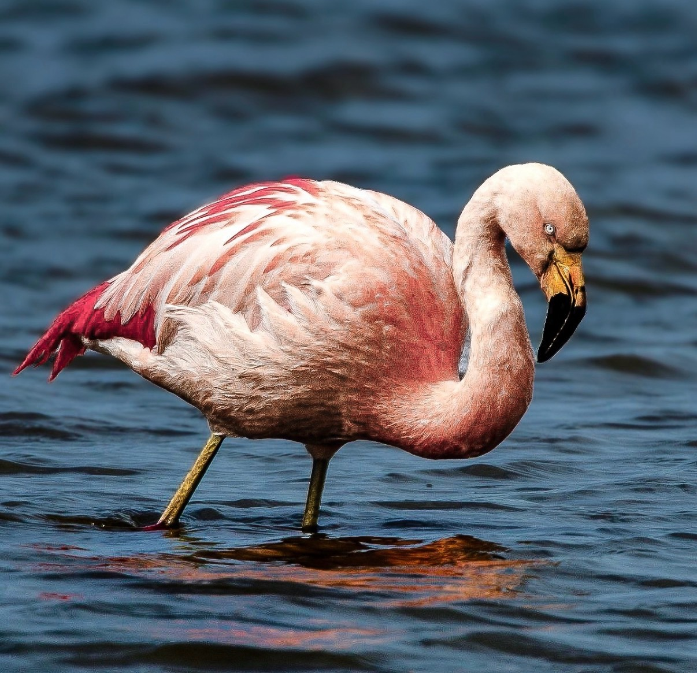

Un filtro natural
Utiliza su pico especializado para filtrar pequeños organismos y partículas alimenticias del agua.

HUMEDALES DE LA PATAGONIA
Phoenicopterus chilensis
Una silueta inconfundible que aporta color y movimiento a lagunas y humedales australes.
Descubre 3 datos de esta especie ↓CONOCE AL PROTAGONISTA
El Flamenco Chileno se reconoce por su elegante figura, patas largas y plumaje de tonos claros con matices rosados. En la Patagonia puede observarse alimentándose en aguas poco profundas, donde filtra pequeños organismos con su característico pico.
DESCUBRE LA ESPECIE
Utiliza su pico especializado para filtrar pequeños organismos y partículas alimenticias del agua.
Los pigmentos carotenoides presentes en su alimentación contribuyen a los tonos rosados de su plumaje.
La alteración de lagunas y humedales afecta sus sitios de alimentación y descanso; conservarlos beneficia a muchas especies.
SONIDOS DE LA PATAGONIA
Escucha el registro sonoro y conoce otra dimensión de esta especie de los humedales patagónicos.
AURA TEXTIL
Esta fotografía forma parte del origen visual de Patagonia Salvaje: fauna real de la Patagonia transformada en una propuesta textil que invita a mirar con más atención nuestro entorno.
EXPERIENCIA QR
El producto te invita a conocer y descubrir más sobre cada especie.
← Volver a Los protagonistas